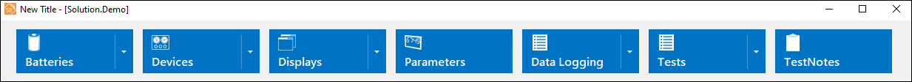
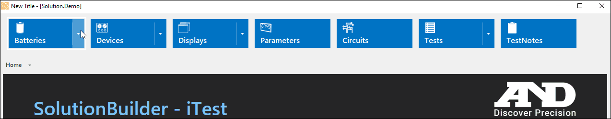
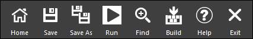
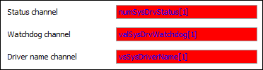
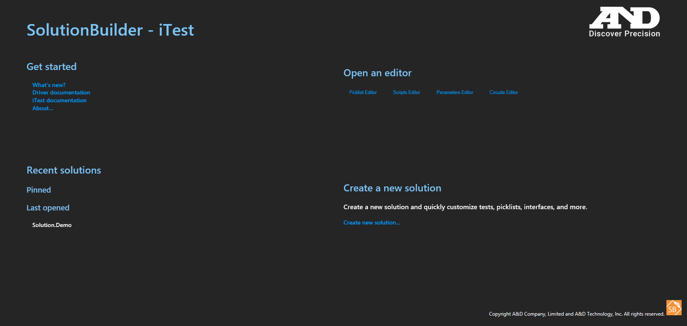

iTest User's Guide
Customizing SolutionBuilder
Product Version 4.5
Prepared By
ADT Software Engineering
A&D Confidential Document Distributable only to A&D Customers
Copyright A&D Company, Limited
A&D Technology Inc.
SolutionBuilder supports customization through XML files. These files replace the default menu settings, allowing you to build your own top level menu and customize other portions of the interface. By default, the SolutionBuilder.xml file is used as the framework for SolutionBuilder; this file may not be included in your solution and can be manually added to the $SUPPORTDIR.
Customized SolutionBuilder Interface

When launching SolutionBuilder, you can specify which XML file to open via the following command-line argument:
 |
NOTE: | - If an XML fie is not specified, then the default SolutionBuilder.xml file will be used. - The Open button is hidden from SolutionBuilder's bottom menu when using the /xml switch. |
Syntax:
SolutionBuilder.exe /xml <XML Filename>
Where:
Example:
SolutionBuilder.exe /xml SolutionBuilder.xml SolutionBuilder.exe /xml C:\ADT\iTest4.4\Solution.Demo\SolutionBuilder.xml
The SolutionBuilder.xml contains seven different sections (title, property page, main menu, editor, bottom menu, plugin support, and actions) that can be used for customization. When the SolutionBuilder.xml file is read, SolutionBuilder will look for these sections' customization values/XMLs. If there are any errors in the SolutionBuilder.xml file, then SolutionBuilder will revert to the default settings.
The following syntax is an example on how to structure the SolutionBuilder.xml file:
<SolutionBuilder>
<Title>New Title</Title>
<PropertyPage>
<ReadOnlyBackColor>Red</ReadOnlyBackColor>
<ReadOnlyForeColor>Blue</ReadOnlyForeColor>
</PropertyPage>
<ProcedureFolders>
<Folder>\SampleFolder\</Folder>
</ProcedureFolders>
<Plugins>
<Plugin>
<FilePath>SamplePlugin.dll</FilePath>
<ClassName>Sample.Plugin</ClassName>
</Plugin>
</Plugins>
<Menus>
<Menu>
<ID>smMenuOption1</ID>
<Item>
<Name>Sub-Menu Option 1</Name>
<Editor>SubMenuOption1</Editor>
</Item>
</Menu>
<Menu>
<ID>smMenuOption2</ID>
<Item>
<Name>Sub-Menu Option 2</Name>
<Editor>SubMenuOption2</Editor>
</Item>
<Item>
<Name>Sub-Menu Option 3</Name>
<Editor>SubMenuOption3</Editor>
</Item>
</Menu>
<Menu>
<Item>
<Name>Menu Option 1</Name>
<SubMenu>smMenuOption1</SubMenu>
<Image>MenuOption1</Image>
</Item>
<Item>
<Name>Menu Option 2</Name>
<SubMenu>smMenuOption2</SubMenu>
<Image>Menu Option 2</Image>
</Item>
</Menu>
</Menus>
<HiddenButtons>
<Button>Report</Button>
<Button>Export</Button>
<Button>Open</Button>
</HiddenButtons>
</SolutionBuilder>
To customize the title dialog for SolutionBuilder, open or create a SolutionBuilder.xml file and use the following syntax:
<SolutionBuilder> <Title>New Title</Title> </SolutionBuilder>
Customized Title
The main (top) menu in the SolutionBuilder interface can be customized to expand, limit, or reorder the listed menu items using the following syntax as an example:
<SolutionBuilder>
<Title>New Title</Title>
<Menus>
<Menu>
<ID>smBatteries</ID>
<Item>
<Name>Types</Name>
<Editor>BatteryTypes</Editor>
</Item>
<Item>
<Name>Specimens</Name>
<Editor>BatterySpecimens</Editor>
</Item>
</Menu>
<Menu>
<ID>smDevices</ID>
<Item>
<Name>Cyclers</Name>
<Editor>Cyclers</Editor>
</Item>
<Item>
<Name>Chambers</Name>
<Editor>Chambers</Editor>
</Item>
<Item>
<Name>Chillers</Name>
<Editor>Chillers</Editor>
</Item>
<Item>
<Name>Cameras</Name>
<Editor>Cameras</Editor>
</Item>
<Item>
<Name>CAN Devices</Name>
<Editor>CANDevices</Editor>
</Item>
<Item>
<Name>Other</Name>
<Editor>Other</Editor>
</Item>
</Menu>
<Menu>
<ID>smDisplays</ID>
<Item>
<Name>Layouts</Name>
<Editor>Layouts</Editor>
</Item>
<Item>
<Name>Toolbars</Name>
<Editor>Toolbars</Editor>
</Item>
<Item>
<Name>Picklists</Name>
<Editor>Picklists</Editor>
</Item>
</Menu>
<Menu>
<ID>smTests</ID>
<Item>
<Name>Schedules</Name>
<Editor>Schedules</Editor>
</Item>
<Item>
<Name>Master Schedules</Name>
<Editor>MasterSchedules</Editor>
</Item>
<Item>
<Name>Procedures</Name>
<Editor>Procedures</Editor>
</Item>
<Item>
<Name>Scripts</Name>
<Editor>Scripts</Editor>
</Item>
<Item>
<Name>Step Conditions</Name>
<Editor>StepConditions</Editor>
</Item>
<Item>
<Name>Circuit Calculations</Name>
<Editor>CircuitCalculations</Editor>
</Item>
</Menu>
<Menu>
<Item>
<Name>Batteries</Name>
<SubMenu>smBatteries</SubMenu>
<Image>Batteries</Image>
</Item>
<Item>
<Name>Devices</Name>
<SubMenu>smDevices</SubMenu>
<Image>Devices</Image>
</Item>
<Item>
<Name>Displays</Name>
<SubMenu>smDisplays</SubMenu>
<Image>Displays</Image>
</Item>
<Item>
<Name>Parameters</Name>
<Editor>Parameters</Editor>
<Image>Parameters</Image>
</Item>
<Item>
<Name>Circuits</Name>
<Editor>Circuits</Editor>
<Image>Circuits</Image>
</Item>
<Item>
<Name>Tests</Name>
<SubMenu>smTests</SubMenu>
<Image>Tests</Image>
</Item>
<Item>
<Name>TestNotes</Name>
<Editor>TestNotes</Editor>
</Item>
</Menu>
</Menus>
</SolutionBuilder>
Customized Main Menu

Customization Values
| Tag | Description |
| <Menu> | Defines a menu. |
| <ID> | String used to identify a sub-menu for use in the <SubMenu> field of <Item>. For the top level menu, do not set an <ID>. |
| <Item> | Defines a button in the menu. This tag can support both an <Editor> and <SubMenu> at the same time. The editor can be selected from the main button and the submenu can be accessed from the drop-down. If an <Item> does not have an <Editor> or a <SubMenu>, it will not appear in the SolutionBuilder Menu. |
| <Name> | The text displayed on the button. Supports localization using standard translation macro files in StringTables folder. For example, the following string channel:MyMacro,t,1033="Schedules",Japanese="スケジュール" Can be called by: {MyMacro} |
| <SubMenu> | String matching the <ID> field of a previously defined <Menu>. Pressing this button will display the referenced sub-menu. |
| <Editor> | String indicating the editor/view to be launched when the button is pressed. Must be one of the editor values listed below: - AllDevices - BatterySpecimens - BatteryTypes - BlackBoxSettings - Calculations - Cameras - CANDevices - Chambers - ChannelDefinitions - Chillers - CircuitCalculations - Circuits - ControlGroups - ControlModes - Cyclers - DataLogs - DataQualityGroups - DynamicCalc - InterVars - Layouts - LimitGroups - LogHeaderForms - LogOrderLists - MapTables - MasterSchedules - ModuleProperties - ModulesDevice - ModulesSpecimen - ModulesTest - ModulesUtility - Other - Parameters - Picklists - PIDSettings - PlotBuffer - Procedures - Reports - SetValueTables - Schedules - Scripts - StepConditions - TestNotes - Toolbars - TopBar |
| <Image> | String used to define the embedded image in a menu button. The string can either be a fully-qualified path to an image file or an <Editor> value. * When using a separate image file, the following image types are supported: BMP, GIF, JPG, PNG, and TIFF. iTest allows use of a standard macro as part of the filepath, such as $SUPPORTDIR. When using a separate image file, the aspect ratio of the image is not automatically adjusted, so modification to the image file may be necessary to prevent the image from being overlapped by the menu option's text. * To use a built-in image, use the value from an <Editor> tag. It is recommended to use built-in images from menu options (editors) on the same level as the one being customized, otherwise there are transparency issues and the image will not be visible in most cases. For example, if customizing the top level Devices menu option and the <Image> item used is one of the lower level menu options (e.g., Cyclers), the Devices menu option's displayed image will be effectively invisible unless you were to rest your cursor on the menu option's button. |
Action buttons in SolutionBuilder's bottom menu can be hidden by adding the <HiddenButtons> and <Button> tags to the SolutionBuilder.xml file. The following values are supported by the <Button> tag:
Example Syntax:
<HiddenButtons>
<Button>ChannelHelper</Button>
<Button>Report</Button>
<Button>Export</Button>
<Button>Open</Button>
</HiddenButtons>
Customized Bottom Menu

To customize the listed procedure folders, SolutionBuilder will look for the following XML:
<ProcedureFolders>
<Folder>\MSchProc\</Folder>
</ProcedureFolders>
|
NOTE: | The folder name must include the preceding and trailing backslashes. |
|
NOTE: | For BTS systems, the pool of available procedure folders is limited to only the User, UserCellBalance, and UserChargeTaper folders. No other procedure folders will be listed regardless of the applied customization or lack thereof. |
If SolutionBuilder finds this XML, then it will list the specified procedure folders. In the example below, the left pane will only list the Dmo1 and SysCoreFunctions folders:
<SolutionBuilder>
<ProcedureFolders>
<Folder>\Dmo1\</Folder>
<Folder>\SysCoreFunctions\</Folder>
</ProcedureFolders>
</SolutionBuilder>
If SolutionBuilder does not find this XML, then it will list all of the available active procedure folders.
To customize the colors for read-only text and combo fields in Device property pages, use the following syntax:
<SolutionBuilder>
<PropertyPage>
<ReadOnlyBackColor>Red</ReadOnlyBackColor>
<ReadOnlyForeColor>Blue</ReadOnlyForeColor>
</PropertyPage>
</SolutionBuilder>
Customized Colors

Additional editors can be added to SolutionBuilder by building a plugin dll in C# and adding some entries for it in SolutionBuilder.xml.
<SolutionBuilder>
<Plugins>
<Plugin>
<FilePath>SamplePlugin.dll</FilePath>
<ClassName>Sample.Plugin</ClassName>
</Plugin>
</Plugins>
</SolutionBuilder>
Plugin Support Values
| Value | Description |
| FilePath | File path of the plugin dll to load. Can just be the filename if it is located in the iTest Execute folder. |
| ClassName | Name of the class implementing the plugin interface. Must include the full namespace. |
The existing SolutionBuilder homepage has been written for a BTS solution. You can modify the homepage for alternative solutions by editing the HTML file located in the iTest installation: $SystemDir\Execute\WWW\Home\home.html. Alternatively, a different HTML file from the $SystemDir\Execute\WWW\Home folder can be used in place of home.html by editing the HomePage= setting in powertek.ini.
Quick links featured on the SolutionBuilder homepage can be added and edited using the home.html file. Any of SolutionBuilder's editors can be linked directly from the homepage using the following syntax:
<a href="*OpenEditor-XXX" class="vis-itest" style="display: none;"><img src=""alt="XXX Editor"></a>
An example is as follows:
<div id="OpenEditor_container">
<h2>Open an editor</h2>
<a href="*OpenEditor-Picklists" class="vis-itest" style="display: none;"><img src="YourImage1.png"alt="Picklist Editor"></a>
<a href="*OpenEditor-Scripts" class="vis-itest" style="display: none;"><img src="YourImage2.png"alt="Scripts Editor"></a>
<a href="*OpenEditor-Parameters" class="vis-itest" style="display: none;"><img src="YourImage3.png"alt="Parameters Editor"></a>
<a href="*OpenEditor-Circuits" class="vis-itest" style="display: none;"><img src="YourImage4.png"alt="Circuits Editor"></a>
</div>
Images can be used as buttons by adding a valid image file to the $SystemDir\Execute\WWW\Home folder.
After saving the file, the updated links will appear next to or in place of the previously featured links.
Customized Links

Executables can be launched from SolutionBuilder by editing the actionGet and actionDone javascript functions at the bottom of home.html. The actions which are defined in actionGet will run every time the SolutionBuilder homepage initializes. This happens when SolutionBuilder starts. Only one instance of the launched executable is supported during the same instance of SolutionBuilder.
The following syntax is used to determine the launched executable:
ret += '<action><cmd>Executable.exe $SUPPORTDIR\\itworks.txt</cmd><result>$SUPPORTDIR\\itworks.txt</result></action>'; return ret;
The following example is found at the bottom of the home.html file:
}
//Can return xml defining actions for SolutionBuilder to run
//<cmd> is the command-line to run
//<result> is optional, it is a text file which will be read when the action finishes and then passed
// to actionDone() in result param.
//multiple <action> elements can be returned to run multiple actions.
function actionGet() {
var ret = '';
ret += '<action><cmd>Notepad.exe $SUPPORTDIR\\itworks.txt</cmd><result>$SUPPORTDIR\\itworks.txt</result></action>';
return ret;
}
//Called by SolutionBuilder when actions from actionGet() complete
// cmd is the command line that finished
// exitCode is the numeric exit code returned by the command
// result contains the contents of the file specified in <result>, or empty string if it wasn't specified.
function actionDone(cmd, exitCode, result) {
//add javascript here to check cmd/exitCode/result and update page as necessary
alert('Cmd: ' + cmd + '\nExitCode:' + exitCode + '\nResult:' + result);
}
To invoke a different executable, alter the .exe.
SolutionBuilder.xml can include command line instructions that are run by SolutionBuilder when the current solution is saved. This can be due to clicking Save, Save As, or on close. The last only occurs if pending changes are saved during the Close event. If more than one <Action> element is present, the Actions will be run sequentially.
|
NOTE: | SolutionBuilder only waits for the called program to be run. It does not wait for a nested series of programs to run. For example, if the run program spawns another program, SolutionBuilder does not automatically wait for the second program to complete. It only waits for the first program to complete before moving on. |
Example:
<SolutionBuilder>
<Actions>
<Action>
<Event>AFTERSAVE</Event>
<Command>EXE</Command>
<CommandArgs>c:\windows\system32\notepad.exe $SUPPORTDIR</CommandArgs>
</Action>
</Actions>
</SolutionBuilder>
The <CommandArgs> field contains the command line to run. The macros ($SUPPORTDIR, $EXECUTEDIR, and $SYSTEMDIR) will get replaced with the appropriate values before the command is run.
Event timing when a Save causes an Action to be triggered while iTest is running: